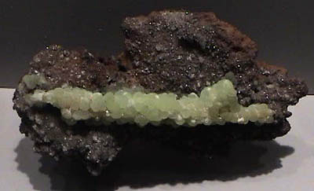
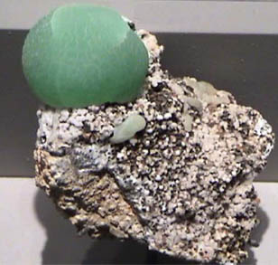

Smithsonite
| 
|
Smithsonite is a carbonate mineral of zinc. It has the composition ZnCO3. The origin of this sample is Broken Hill, New South Wales, Australia. It is on display in the Smithsonian Museum of Natural History. The sample measures about 8 cm across.
|
The sample above exhibits a typical structure for Smithsonite, having the appearance of grape clusters. The form is called "botryoidal", and in large samples has the appearance of a bubbly landscape.
Smithsonite is a member of the calcite group of carbonates along with rhodochrosite and siderite.
| This sample of Smithsonite is from Mammoth Mine, Tiger, Arizona. It measures about 7cm across with the spherical crystal being about 3 cm in diameter.
Smithsonite is named for James Smithson, founder of the Smithsonian Institution. It's most well-known colors are apple green to bluegreen, but can be purple or lavender and a range of other colors from impurities. It has a silky or pearly lustre.
Smithsonite is a minor ore for zinc.
| 
|
|
Index |